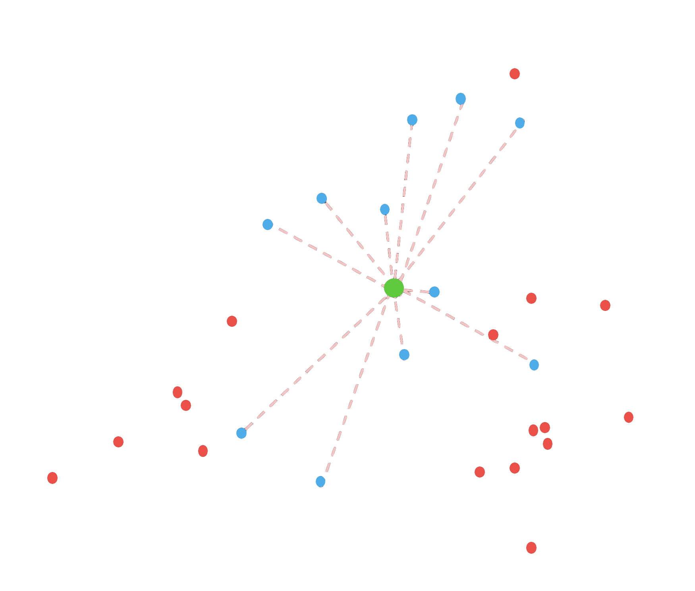
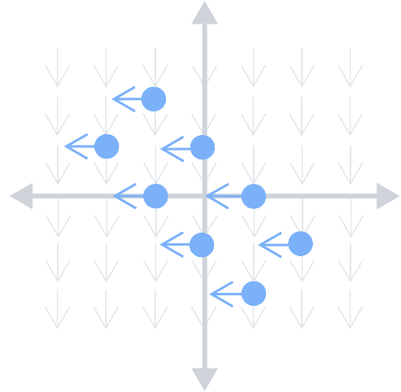
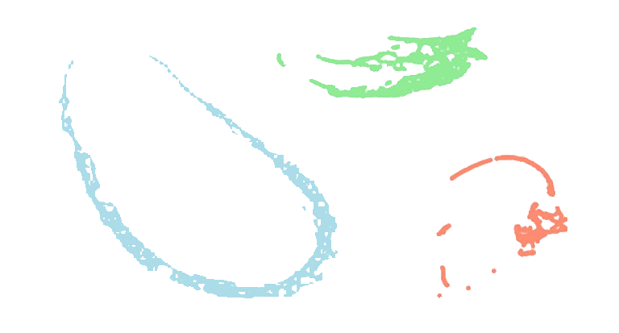
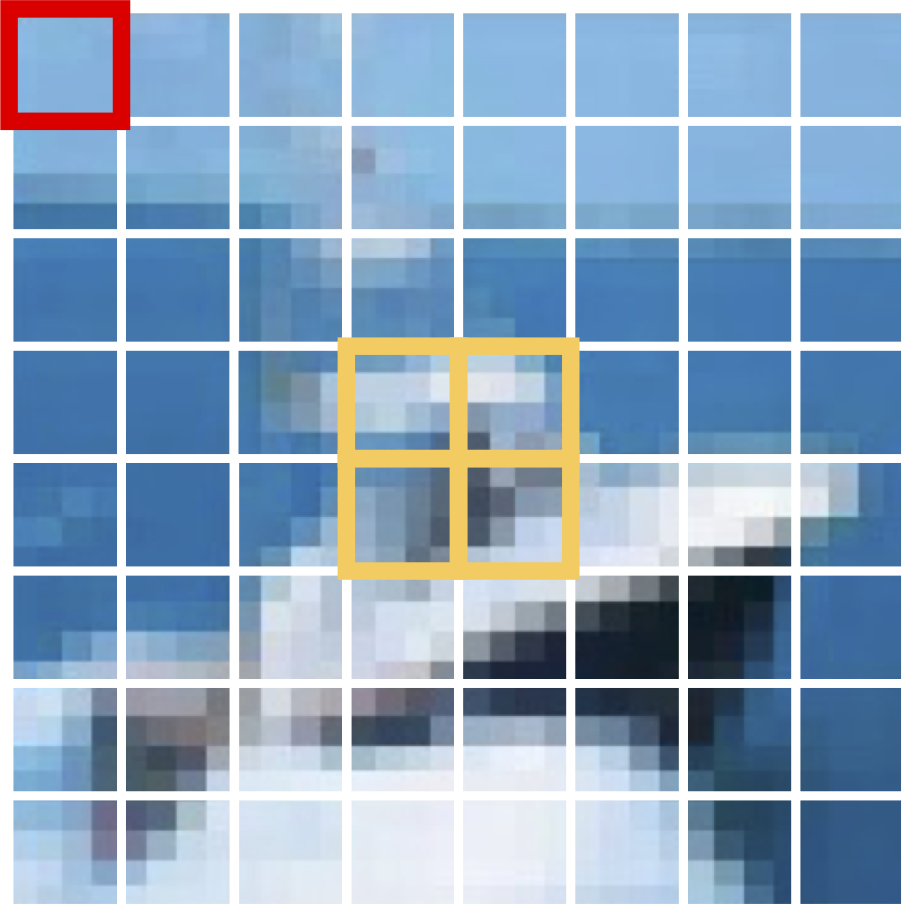
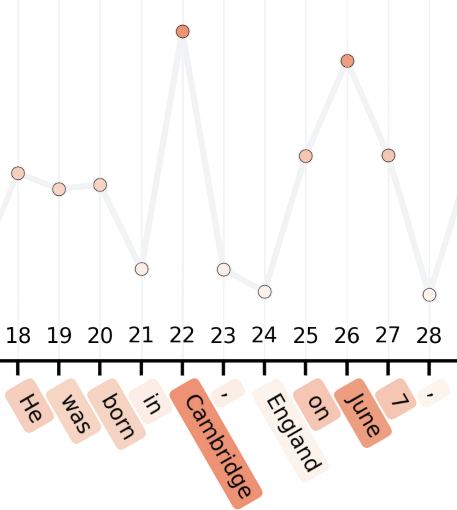

Greyson Brothers
Hello! I'm an incoming Computer Science PhD student at Stanford with interests in efficient + continual
learning, attention, memory mechanisms, reinforcement learning, and the brain. My goal is to develop scalable
systems that can learn rapidly from continual interactions with humans in the real world.
Prior to this, I spent 5 years as a researcher at Johns Hopkins University
Applied Physics Lab under the supervision of
Dr. John Winder and
Dr. Willa Mannering. Our group focused on the development of intelligent, multi-agent autonomy
for unmanned aircraft, along with the evaluation of human and machine teams. My work spanned the full deep reinforcement
learning pipeline, from representation learning theory to live flight tests.
I obtained a Bachelor's in Applied Math from UCLA in 2020 and a Master's in Computer Science from Johns Hopkins in
2025, where I conducted research advised by
Prof. Mark Fleischer during my part-time studies.
Publications
Robust Noise Attenuation via Adaptive Pooling of Transformer Outputs
International Conference on Machine Learning, ICML 2025.
Spotlight (Top 2.6% of 12k submissions)
{kind=link}

PEnGUiN: Partially Equivariant Graph Neural Networks for Sample-Efficient MARL
Reinforcement Learning Conference, RLC 2025.

Beyond Human Reasoning: Bridging the Human-Machine Information Gap
SPIE Defense + Commercial Sensing, 2025.

Robust Noise Attenuation via Adaptive Pooling of Transformer Outputs
ICML Tokenization Workshop, 2025.
(dual submission with main track above)

Uncovering Uncertainty in Transformer Inference
NeurIPS Workshop on Foundation Model Interventions, 2024.

Projects
Visualizing
Associative Memory
We tend to remember things that are highly related to, or associated with, what we are currently seeing, hearing, thinking, and so on.
Mathematical models of associative memory have beautiful graphical representations, with memories visualized as point attractors with their own gravity in an energy landscape.
Explore and manipulate the energy function in this interactive, desmos 3D plot.
ASCII
Image Recall
Surprisingly, an efficient image-to-ascii conversion algorithm has strong ties to some important concepts in deep learning:
- Image patch embedding
- 2D Convolutions
- Key-value memory retrieval
This project is a simple visual introduction to the above concepts and a nice primer for memory-based retrieval systems. Plus, who doesn't like ascii art?